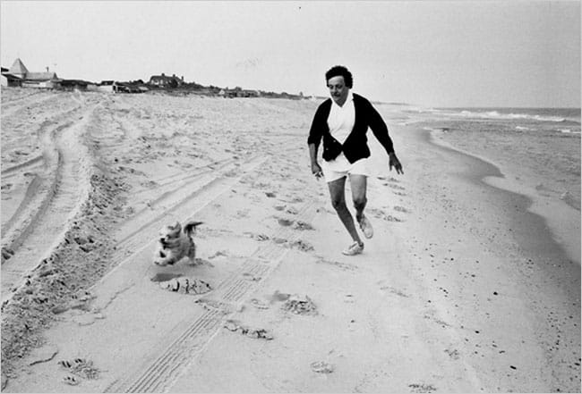

Про айпад
Это какойто анрил, но у айпада реально вечная батарейка!
Это какойто анрил, но у айпада реально вечная батарейка!

Я очень похожим образом ее себе представлял, хотя в моем соображении она была чуточку худее)) via
Пользоваться инетом с Айфона в штатах все-таки можно. Для этого надо пойти не к AT&T, у которых таки нет препейда с дата коннекшинами, а через улицу - к t-mobile. Те продадут план на месяц (голосовой и смсочный локальный анлим за $50 + $10 за анлим смски в Россию, плюс 100 мегов 3G, а потом анлим edge), обрежут симку и дадут фирменный micro sim extractor, сделанный из канцелярской скрепки.
Лучше от этого станет, но не сильно: вместо 3g у нас edge (3g с какими-то условиями, под которые мы не попадаем), да и сама связь совсем не напоминает привычный Мегафон дома - она то есть, то ее нет. Короче, полное ощущение, что ты в русской деревне, где для того, чтобы позвонить, надо сначала походить кругами вокруг да около, а потом еще и разговаривать, стоя на носочках)
Пишите, если че: +1 (415) 691 08 81.

Тут все перемещаются на совершенно офигенных велах. Я думал, где Convoy берет такие клевые велы - оказывается в Сан-Франциско!
У них тут какая-то своя модификация шоссейников — тонюсенькие колеса (ах!!!) и часто всего одна передача, как у городских.
Чувак на скучной сессии про то, как правильно дизайнить юзер интерфейсы, показал клевый айпадный апп — Architizer. Сижу вот, разглядываю архитектурные шедевры.
В этот раз:

Оказывается, "байт" по-французски будет "octet", так что килобайты и мегабайты будут Ko и Mo, соответственно :)
С большим удовольствием прочитал "Одноэтажную Америку" Ильфа и Петрова. Нашел целый ряд сходств между 1935 годом и годом 2011 (например, служба доставки товаров по каталогу в любую точку Америки за 24 часа, бесшумные лифты, отличные дороги и т.д.).
И интересно в этом, конечно же, не то, что все это существует сейчас, а-то, что все это существовало 76 лет назад! 76 лет назад бесшумный лифт поднял авторов на ЭмпейерСтейтБилдинг с такой скоростью, что у них уши заложило!
И так мило после этого (пребывая в году 2011) читать в одной из последних глав о том, что, дескать, еще неизвестно, что будет с Америкой через 50 лет, но зато с уверенностью можно утверждать какое счастливое будущее ждет через тот же период времени Советский Союз.
Отличная книжка, рекомендую!
Думается, на википедии была бы не лишней кнопка Send to my Kindle.
Нашел онлайн тулзу, которая умеет генерить (но не посылать) mobi для статьи из википедии. А вот еще похожий сервис от тех же чуваков, который уже умеет посылать прямо на киндл.
А еще придумался сервис, на который можно отправить по почте урл с википедии (с айфона, стоя в очереди в аэропорту), который вытянет страничку, форматнет и зашлет в киндл! А может даже уже есть такое?